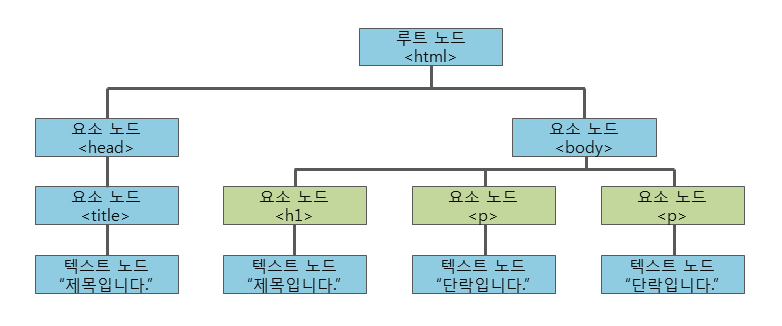

CSS에서는 스타일을 적용할 대상을 선택하기 위해서 선택자(selector)를 사용합니다.
지금까지 살펴본 대표적인 선택자는 다음과 같습니다.
- 전체 선택자
- HTML 요소 선택자
- 아이디(id) 선택자
- 클래스(class) 선택자
- 그룹(group) 선택자
CSS를 적용할 대상으로 HTML 문서 내부의 모든 요소를 선택합니다.
<style>
* { color: red; }
</style>
CSS를 적용할 대상으로 HTML 요소의 이름을 직접 사용하여 선택할 수 있습니다.
<style>
h2 { color: teal; text-decoration: underline; }
</style>
...
<h2>이 부분에 스타일을 적용합니다.</h2>
아이디 선택자는 CSS를 적용할 대상으로 특정 요소를 선택할 때 사용합니다.
이 선택자는 웹 페이지에 포함된 여러 요소 중에서 특정 아이디 이름을 가지는 요소만을 선택해 줍니다.
<style>
#heading { color: sandybrown; text-decoration: line-through; }
</style>
...
<h2 id="heading">이 부분에 스타일을 적용합니다.</h2>
HTML과 CSS에서는 하나의 웹 페이지에 속하는 여러 요소에 같은 아이디 이름을 사용해도 별 문제없이 동작합니다.
하지만 이렇게 중복된 아이디를 가지고 자바스크립트 작업을 하게 되면 오류가 발생합니다.
따라서 되도록이면 하나의 웹 페이지에 속하는 요소에는 다른 아이디 이름을 사용하거나 클래스를 사용하는 것이 좋습니다.
클래스 선택자는 특정 집단의 여러 요소를 한 번에 선택할 때 사용합니다.
이러한 특정 집단을 클래스(class)라고 하며, 같은 클래스 이름을 가지는 요소들을 모두 선택해 줍니다.
<style>
.headings { color: deepskyblue; text-decoration: overline; }
</style>
...
<h2 class="headings">이 부분에 스타일을 적용합니다.</h2>
<p>클래스 선택자를 이용하여 스타일을 적용할 HTML 요소들을 한 번에 선택할 수 있습니다.</p>
<h3 class="headings">이 부분에도 같은 스타일을 적용합니다.</h3>
그룹 선택자는 위에서 언급한 여러 선택자를 같이 사용하고자 할 때 사용합니다.
그룹 선택자는 여러 선택자를 쉼표(,)로 구분하여 연결합니다.
이러한 그룹 선택자는 코드를 중복해서 작성하지 않도록 하여 코드를 간결하게 만들어 줍니다.
<style>
h2 { color: navy; }
h2, h3 { text-align: center; }
h2, h3, p { background-color: lightgray; }
</style>
CSS 선택자는 하나 이상의 선택자를 포함할 수 있습니다.
결합 선택자는 연관된 선택자들 간의 관계를 설정해 줍니다.
자손 선택자는 해당 요소의 하위 요소 중에서 특정 타입의 요소를 모두 선택합니다.
다음 예제는 모든 <div>태그의 하위 요소 중에서 <p>태그를 모두 선택하는 예제입니다.
div p {스타일;}
위의 예제처럼 자손 선택자는 div와 p 사이에 한 칸의 띄어쓰기를 반드시 명시해야 합니다.
<style>
div p { background-color: #FFEFD5; }
</style>
자식 선택자는 해당 요소의 바로 밑에 존재하는 하위 요소 중에서 특정 타입의 요소를 모두 선택합니다.
다음 예제는 모든 <div>태그의 바로 밑에 존재하는 하위 요소 중에서 <p>태그를 모두 선택하는 예제입니다.
div > p {스타일;}
<style>
div > p { background-color: #FFEFD5; }
</style>
동위 선택자는 동위 관계에 있는 요소 중에서 해당 요소보다 뒤에 존재하는 특정 타입의 요소를 모두 선택합니다.
동위 관계란 HTML 요소의 계층 구조에서 같은 부모(parent) 요소를 가지고 있는 요소들을 의미합니다.
이러한 동위 관계에 있는 요소들을 형제(sibling) 요소라고 합니다.

위의 그림에서 초록색으로 표시된 세 요소는 모두 <body>요소를 부모 요소로 가집니다.
따라서 이 세 요소는 동위 관계에 있는 형제 요소라고 할 수 있습니다.
일반 동위 선택자는 해당 요소와 동위 관계에 있으며, 해당 요소보다 뒤에 존재하는 특정 타입의 요소를 모두 선택합니다.
다음 예제는 모든 <div>태그와 동위 관계에 있는 요소 중에서 <div>태그보다 뒤에 존재하는 <p>태그를 모두 선택하는 예제입니다.
div ~ p {스타일;}
<style>
div ~ p { background-color: #FFE4E1; }
</style>
영어로 adjacent는 인접한, 가까운 이라는 의미가 있습니다.
인접 동위 선택자는 해당 요소와 동위 관계에 있으며, 해당 요소의 바로 뒤에 존재하는 특정 타입의 요소를 모두 선택합니다..
다음 예제는 모든 <div>태그와 동위 관계에 있는 요소 중에서 <div>태그의 바로 뒤에 존재하는 <p>태그를 모두 선택하는 예제입니다.
div + p {스타일;}
<style>
div + p { background-color: #FFE4E1; }
</style>
CSS에서 의사 클래스(pseudo-class)는 선택하고자 하는 HTML 요소의 특별한 '상태(state)'를 명시할 때 사용합니다.
의사 클래스(pseudo-class)를 사용하기 위한 문법은 다음과 같습니다.
선택자:의사클래스이름 {속성: 속성값;}
클래스(class)나 아이디(id)에도 의사 클래스(pseudo-class)를 사용할 수 있습니다.
선택자.클래스이름:의사클래스이름 {속성: 속성값;}
선택자#아이디이름:의사클래스이름 {속성: 속성값;}
CSS에서 자주 사용하는 대표적인 의사 클래스는 다음과 같습니다.
1. 동적 의사 클래스(dynamic pseudo-classes)
- :link
- :visited
- :hover
- :active
- :focus
2. 상태 의사 클래스(UI element states pseudo-classes)
- :checked
- :enabled
- :disabled
3. 구조 의사 클래스(structural pseudo-classes)
- :first-child
- :nth-child
- :first-of-type
- :nth-of-type
4. 기타 의사 클래스
- :not
- :lang
CSS에서 의사 클래스(pseudo-class)는 선택하고자 하는 HTML 요소의 특별한 '상태(state)'를 명시할 때 사용합니다.
의사 클래스(pseudo-class)를 사용하기 위한 문법은 다음과 같습니다.
선택자:의사클래스이름 {속성: 속성값;}
클래스(class)나 아이디(id)에도 의사 클래스(pseudo-class)를 사용할 수 있습니다.
선택자.클래스이름:의사클래스이름 {속성: 속성값;}
선택자#아이디이름:의사클래스이름 {속성: 속성값;}
CSS에서 자주 사용하는 대표적인 의사 클래스는 다음과 같습니다.
1. 동적 의사 클래스(dynamic pseudo-classes)
- :link
- :visited
- :hover
- :active
- :focus
2. 상태 의사 클래스(UI element states pseudo-classes)
- :checked
- :enabled
- :disabled
3. 구조 의사 클래스(structural pseudo-classes)
- :first-child
- :nth-child
- :first-of-type
- :nth-of-type
4. 기타 의사 클래스
- :not
- :lang
CSS에서 사용할 수 있는 동적 의사 클래스는 다음과 같습니다.
- :link
- :visited
- :hover
- :active
- :focus
동적 의사 클래스를 사용하면 링크의 상태에 따라 각각의 스타일을 별도로 설정할 수 있습니다.
<style>
a:link {color: orange;}
a:visited {color: gray;}
a:hover {color: blue;}
a:active {color: red;}
div:hover { background-color: blue; color: white; }
</style>
링크는 총 5가지의 상태를 가지며, 각 상태마다 별도의 스타일을 적용할 수 있습니다.
1. link : 링크의 기본 상태이며, 사용자가 아직 한 번도 이 링크를 통해 연결된 페이지를 방문하지 않은 상태입니다.
2. visited : 사용자가 한 번이라도 이 링크를 통해 연결된 페이지를 방문한 상태입니다.
3. hover : 사용자의 마우스 커서가 링크 위에 올라가 있는 상태입니다.
4. active : 사용자가 마우스로 링크를 클릭하고 있는 상태입니다.
5. focus : 키보드나 마우스의 이벤트(event) 또는 다른 형태로 해당 요소가 포커스(focus)를 가지고 있는 상태입니다.
<style>
input { border: 3px solid #FFEFD5; transition: 0.5s; }
input:focus { border: 3px solid #CD853F; }
</style>
구조 의사 클래스를 사용하면 HTML 요소의 계층 구조에서 특정 위치에 있는 요소를 선택할 수 있습니다.
CSS에서 사용할 수 있는 구조 의사 클래스는 다음과 같습니다.
- :first-child
- :last-child
- :nth-child
- :nth-last-child
- :first-of-type
- :last-of-type
- :nth-of-type
- :nth-last-of-type
:first-child는 모든 자식(child) 요소 중에서 맨 앞에 위치하는 자식(child) 요소를 모두 선택합니다.
<style>
p:first-child { color: red; font-weight: bold; }
</style>
:last-child는 모든 자식(child) 요소 중에서 맨 마지막에 위치하는 자식(child) 요소를 모두 선택합니다.
<style>
p:last-child { color: red; font-weight: bold; }
</style>
:nth-child는 모든 자식(child) 요소 중에서 앞에서부터 n번째에 위치하는 자식(child) 요소를 모두 선택합니다.
<style>
p:nth-child(2n) { color: red; font-weight: bold; }
</style>
:nth-last-child는 모든 자식(child) 요소 중에서 뒤에서부터 n번째에 위치하는 자식(child) 요소를 모두 선택합니다.
<style>
p:nth-last-child(3n) { color: red; font-weight: bold; }
</style>
:first-of-type는 모든 자식(child) 요소 중에서 맨 처음으로 등장하는 특정 타입의 요소를 모두 선택합니다.
<style>
p:first-of-type { color: red; font-weight: bold; }
</style>
:last-of-type는 모든 자식(child) 요소 중에서 맨 마지막으로 등장하는 특정 타입의 요소를 모두 선택합니다.
<style>
p:last-of-type { color: red; font-weight: bold; }
</style>
:nth-of-type는 모든 자식(child) 요소 중에서 n번째로 등장하는 특정 타입의 요소를 모두 선택합니다.
<style>
p:nth-of-type(2n) { color: red; font-weight: bold; }
</style>
:nth-last-of-type는 모든 자식(child) 요소 중에서 뒤에서부터 n번째로 등장하는 특정 타입의 요소를 모두 선택합니다.
<style>
p:nth-last-of-type(2n+1) { color: red; font-weight: bold; }
</style>
:only-child는 자식(child) 요소를 단 하나만 가지는 요소의 자식(child) 요소를 모두 선택합니다.
<style>
p:only-child { color: red; font-weight: bold; }
</style>
:only-of-type는 자식(child) 요소로 특정 타입의 요소 단 하나만을 가지는 요소의 자식(child) 요소를 모두 선택합니다.
<style>
p:only-of-type { color: red; font-weight: bold; }
</style>
:empty는 자식(child) 요소를 전혀 가지고 있지 않은 요소를 모두 선택합니다.
<style>
p:empty { width: 300px; height: 20px; background: red; }
</style>
:root는 해당 문서의 root 요소를 선택합니다.
<style>
:root { background: red; }
</style>
HTML 문서에서 root 요소는 언제나 html 요소입니다.
의사 요소(pseudo-element)를 사용하기 위한 문법은 다음과 같습니다.
선택자::의사요소이름 {속성: 속성값;}
CSS에서 자주 사용하는 대표적인 의사 요소는 다음과 같습니다.
- ::first-letter
- ::first-line
- ::before
- ::after
- ::selection
이 의사 요소(pseudo-element)는 텍스트의 첫 글자만을 선택합니다.
단, 블록(block) 타입의 요소에만 사용할 수 있습니다.
이 의사 요소를 통해 사용할 수 있는 속성은 다음과 같습니다.
- font 속성
- color 속성
- background 속성
- margin 속성
- padding 속성
- border 속성
- text-decoration 속성
- text-transform 속성
- line-height 속성
- float 속성
- clear 속성
- vertical-align 속성 (단, float 속성값이 none일 경우에만)
<style>
p::first-letter { color: #FF4500; font-size: 2em; }
</style>
이 의사 요소는 텍스트의 첫 라인만을 선택합니다.
단, 블록(block) 타입의 요소에만 사용할 수 있습니다.
이 의사 요소를 통해 사용할 수 있는 속성은 다음과 같습니다.
- font 속성
- color 속성
- background 속성
- word-spacing 속성
- letter-spacing 속성
- text-decoration 속성
- text-transform 속성
- line-height 속성
- clear 속성
- vertical-align 속성
이 의사 요소는 특정 요소의 내용(content) 부분 바로 앞에 다른 요소를 삽입할 때 사용합니다.
<style>
p::before { content: url("/examples/images/img_penguin.png"); }
</style>
이 의사 요소는 특정 요소의 내용(content) 부분 바로 뒤에 다른 요소를 삽입할 때 사용합니다.
<style>
p::after { content: url("/examples/images/img_penguin.png"); }
</style>
이 의사 요소는 해당 요소에서 사용자가 선택한 부분만을 선택할 때 사용합니다.
<style>
p::selection { color: #FF4500; }
</style>
하나의 HTML 요소에 여러 개의 의사 요소를 동시에 적용할 수 있습니다.
<style>
p::first-letter { color: #FFD700; font-size: 2em; font-weight: bold; }
p::first-line { color: #FF4500; }
</style>
속성 선택자를 사용하면 특정 속성이나 특정 속성값을 가지고 있는 HTML 요소를 선택할 수 있습니다.
CSS에서 사용할 수 있는 기본 속성 선택자는 다음과 같습니다.
- [속성이름] 선택자
- [속성이름="속성값"] 선택자
[속성이름] 선택자는 특정 속성을 가지고 있는 요소를 모두 선택합니다.
<style>
[title] { background: black; color: yellow; }
</style>
[속성이름="속성값"] 선택자는 특정 속성을 가지고 있으며, 해당 속성의 속성값까지 일치하는 요소를 모두 선택합니다.
<style>
[title="first h2"] { background: black; color: yellow; }
</style>
CSS에서는 기본 속성 선택자 이외에도 문자열 속성 선택자를 제공합니다.
문자열 속성 선택자는 HTML 요소가 가지고 있는 특정 속성의 속성값 내에 특정 문자열을 확인하여 선택해 줍니다.
CSS에서 사용할 수 있는 문자열 속성 선택자는 다음과 같습니다.
- [속성이름~="속성값"] 선택자
- [속성이름|="속성값"] 선택자
- [속성이름^="속성값"] 선택자
- [속성이름$="속성값"] 선택자
- [속성이름*="속성값"] 선택자
[속성이름~="속성값"] 선택자는 특정 속성의 속성값에 특정 문자열로 이루어진 하나의 단어를 포함하는 요소를 모두 선택합니다.
<style>
[title~="first"] { background: black; color: yellow; }
</style>
위의 예제에서는 title 속성값이 "first h2"인 요소와 "first p"인 요소만 선택됩니다.
title 속성값이 "first-p"인 요소는 선택되지 않습니다.
이처럼 [속성이름~="속성값"] 선택자는 title 속성값이 정확히 "first"인 요소나 띄어쓰기(whitespace)를 기준으로 인식되는 단어에 "first"를 포함한 요소만을 선택합니다.
[속성이름|="속성값"] 선택자는 특정 속성의 속성값이 특정 문자열로 이루어진 하나의 단어로 시작하는 요소를 모두 선택합니다.
<style>
[title|="first"] { background: black; color: yellow; }
</style>
위의 예제에서는 title 속성값이 "first-p"인 요소만 선택됩니다.
title 속성값이 "first h2"나 "first p"인 요소들은 선택되지 않습니다.
이처럼 [속성이름|="속성값"] 선택자는 title 속성값이 정확히 "first"인 요소나 "first" 바로 다음에 하이픈(-)으로 시작하는 요소만을 선택합니다.
[속성이름^="속성값"] 선택자는 특정 속성의 속성값이 특정 문자열로 시작하는 요소를 모두 선택합니다.
<style>
[title^="first"] { background: black; color: yellow; }
</style>
이 선택자는 [속성이름|="속성값"] 선택자와는 달리 속성값이 특정 문자열로 시작하면 모두 선택해 줍니다.
따라서 위의 예제에서는 title 속성값이 "first"로 시작되는 요소가 모두 선택됩니다.
[속성이름$="속성값"] 선택자는 특정 속성의 속성값이 특정 문자열로 끝나는 요소를 모두 선택합니다.
<style>
[title$="first"] { background: black; color: yellow; }
</style>
이 선택자는 특정 속성의 속성값이 특정 문자열로 끝나기만 하면 모두 선택해 줍니다.
따라서 위의 예제에서는 title 속성값이 "first"로 끝나는 요소가 모두 선택됩니다.
[속성이름*="속성값"]
[속성이름*="속성값"] 선택자는 특정 속성의 속성값에 특정 문자열를 포함하는 요소를 모두 선택합니다.
<style>
[title*="first"] { background: black; color: yellow; }
</style>
이 선택자는 특정 속성의 속성값이 특정 문자열를 포함하기만 하면 모두 선택해 줍니다.
따라서 위의 예제에서는 title 속성값에 "first"를 포함하는 요소가 모두 선택됩니다.
위에서 설명한 속성 선택자들을 활용하면 클래스나 아이디의 지정 없이도 스타일을 적용할 HTML 요소를 손쉽게 선택할 수 있습니다.
<style>
input[type="text"] { width: 150px; display: block; background-color: #FFEFD5; margin-bottom: 10px; }
input[type="password"] { width: 130px; display: block; background-color: #90EE90; border: solid 2px red; }